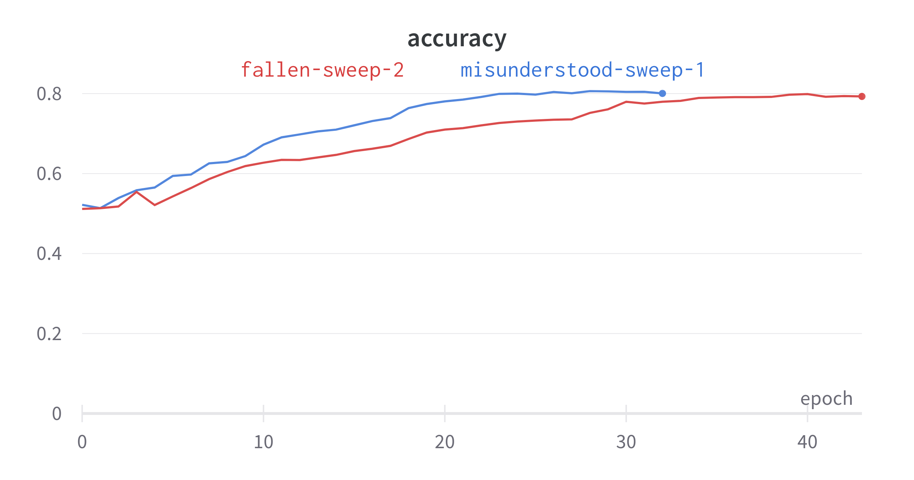
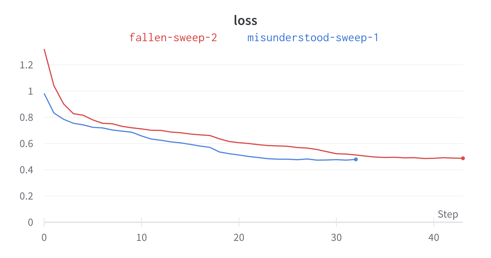
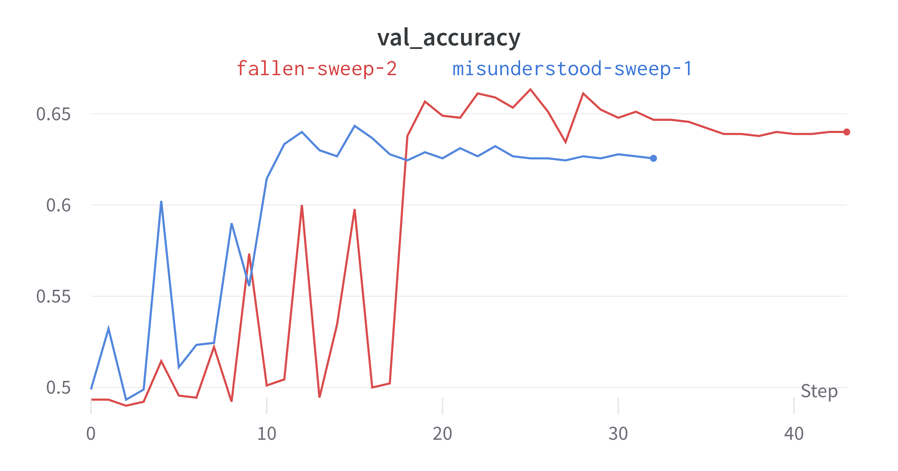
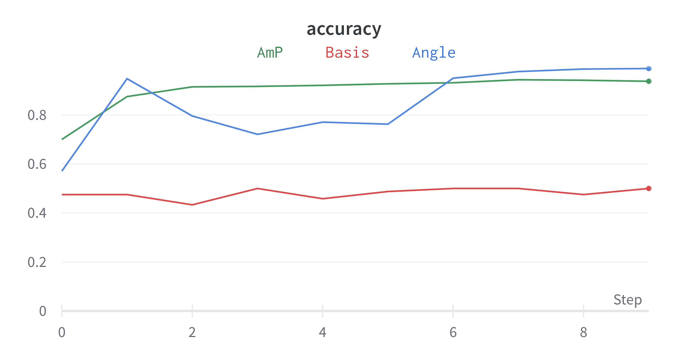
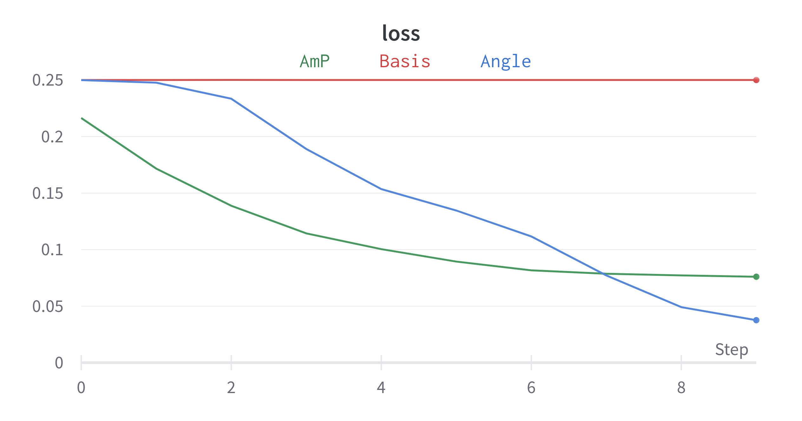
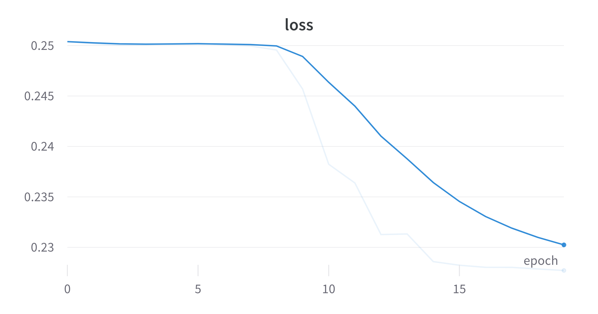
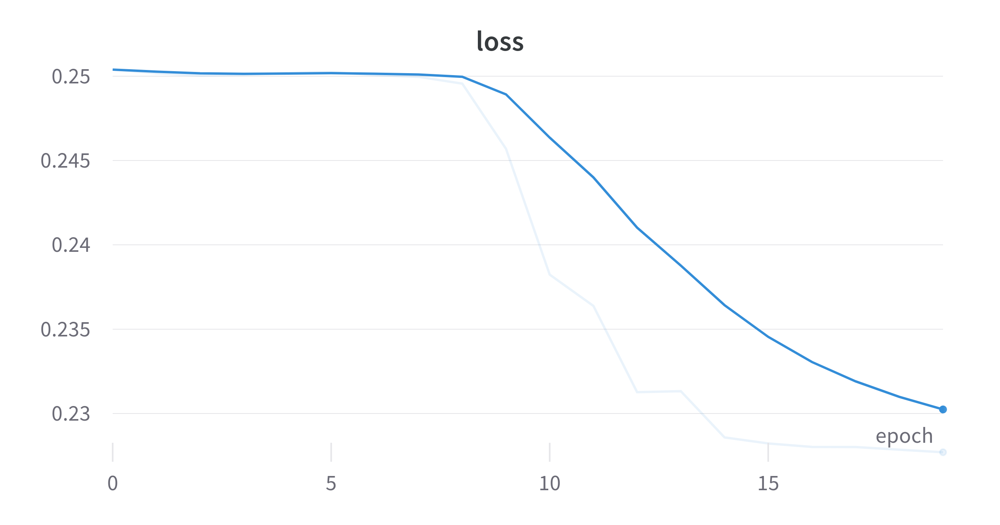
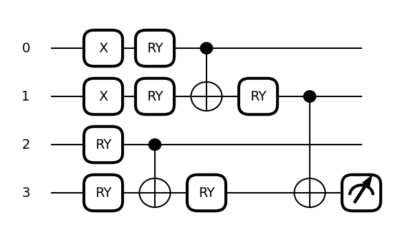

Fused Transfer Learning with Quantum
revealOptions: transition: ‘fade’ transitionSpeed: ‘fast’ width: 1400 —
Classical Models
ElectronPhoton Energy channel - ResnetV1 - Depths 20, 44 - 40 epochs
| Depth | Acc | Val acc |
|---|---|---|
| 20 | 0.8 | 0 .64 |
| 44 | 0.79 | 0.626 |



Results on Pretrained model
- Resnet50 $\rightarrow$ 512 $\rightarrow$ 128 $\rightarrow$ 2
- Pretrained on ImageNet
- Using Log scaling with Ranger Optimizer
- Acc: 0.5, Val Acc: 0.5


Results on Quantum CNN
- Mini Mnist
- 0 1 images
- 200 images per class
- Center cropped $\rightarrow$ (20,20)
- Resized $\rightarrow$ (8,8)
- Sweep using Chen Ansatz (3 layers). Using DRC.
- Feature maps: Amplitude, Angle, Basis.
- 10 epochs
Quantum CNN
Model: "QCNN-AmplitudeMap-Chen"
_________________________________________________________________
Layer (type) Output Shape Param #
=================================================================
input_1 (InputLayer) [(None, 8, 8, 1)] 0
qconv2d_1 (QConv2D) (None, 4, 4, 1) 81
flatten (Flatten) (None, 16) 0
TwoLayerPQC (TwoLayerPQC) (None, 1) 81
=================================================================
Total params: 162
Trainable params: 72
Non-trainable params: 90
_________________________________________________________________

- Kernel: (3,3)
- Strides: (2,2)
- Op: -0.5*Z + 0.5*I
Results
| Feature Map | Acc | Val acc |
|---|---|---|
| Amp | 0.9375 | 0 .933 |
| Angle | 0.9896 | 0.9917 |
| Basis | 0.5 | 0.5 |
BasisMap without DRC gives the same scores.



QCNN on EP
- ElectronPhoton (only 900 train images)
- Center cropped $\rightarrow$ (8,8)
- Log Scaling followed by min max scaling
- Same Ansatz as previous (Not using DRC)
- AngleMap
- 20 epochs
- Acc: 0.61, Val Acc: 0.53
 


More Architectures
- Created QCNN hybrid model with FC layers at the end. (yet to test)
- Created a new ansatz TTN.

Feature engineering EP
- Flattened images into rows. Created a dataframe.
- Correlation of all columns with target.
target 1.000000
ind-(16,16) 0.153360
ind-(16,15) 0.120210
ind-(16,18) 0.104080
ind-(16,17) 0.065687
Name: target, dtype: float64
- Tried feature Agglomeration using xgboost as classifier
cluster: 1 train acc is: 68.36 prediction acc is: 49.60
cluster: 5 train acc is: 86.11 prediction acc is: 59.90
cluster: 6 train acc is: 88.34 prediction acc is: 59.40
cluster: 7 train acc is: 90.44 prediction acc is: 64.30
Contd.
- Train scores are higher than predicition scores.
- Even by restricting the number of features test scores does not increase.
- Need to spend more than on feature engineering on the dataset.
Status
Done:
- Preliminary results on MNIST and EP (classical & quantum).
- Tried transfer learning.
- Tried feature engineering on EP.
Goals for next week:
- Giving attention to EP.
- Transfer learning with VQC.
- Testing EP with TTN.
- Using QCNN Hybrid with EP.
Questions:
- Any suggestions on how to feature engineer EP?
- Any other feedback?
References
- Cong, I., Choi, S. & Lukin, M.D. Quantum convolutional neural networks. Nat. Phys. 15, 1273–1278 (2019). https://doi.org/10.1038/s41567-019-0648-8
- S.~Y.~C.~Chen, T.~C.~Wei, C.~Zhang, H.~Yu and S.~Yoo, ``Quantum convolutional neural networks for high energy physics data analysis,’’ Phys. Rev. Res. \textbf{4} (2022) no.1, 013231 doi:10.1103/PhysRevResearch.4.013231
- Liu, J., Lim, K.H., Wood, K.L. et al. Hybrid quantum-classical convolutional neural networks. Sci. China Phys. Mech. Astron. 64, 290311 (2021). https://doi.org/10.1007/s11433-021-1734-3
- Tüysüz, C., Rieger, C., Novotny, K. et al. Hybrid quantum classical graph neural networks for particle track reconstruction. Quantum Mach. Intell. 3, 29 (2021). https://doi.org/10.1007/s42484-021-00055-9
- Pérez-Salinas, A., Cervera-Lierta, A., Gil-Fuster, E., & Latorre, J. (2020). Data re-uploading for a universal quantum classifier. Quantum, 4, 226.
- Chen, Yusui & Hu, Wenhao & Li, Xiang. (2021). Feasible Architecture for Quantum Fully Convolutional Networks.
- Chen, Yixiong. (2021). QDCNN: Quantum Dilated Convolutional Neural Network.